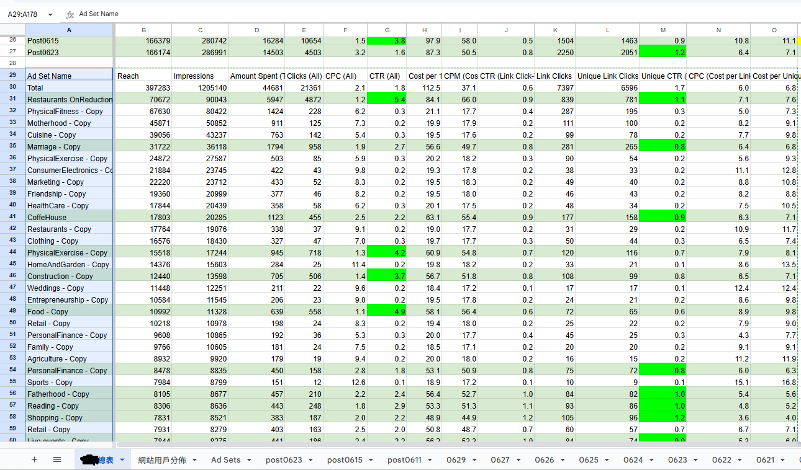

💡 核心問題解答
Q: 什麼是1美元爆量法？
1美元爆量法是透過大量複製廣告ID並設定極低日預算，讓演算法快速學習並找到最佳受眾組合的測試策略。通過短時間內大量測試不同受眾屬性，識別出回應最好的廣告組合後再進行預算擴量。
Q: ASC (Advantage+ Shopping Campaigns) 有何優勢？
ASC是Meta推出的自動化廣告系列，透過機器學習自動優化受眾、版位、創意和預算分配。根據Meta官方數據，ASC在2024年實現70%年成長率，平均ROAS達3.90，相較傳統廣告提升明顯。
Q: CBO和ABO哪個更適合擴量？
CBO（廣告系列預算優化）適合大規模穩定擴量，由演算法自動分配預算給表現最佳的廣告組。ABO（廣告組預算優化）適合精細控制和測試階段，可手動調整各廣告組預算比例。
⚡ 策略一：1美元爆量法實戰應用
大量廣告組合測試與快速複製策略

🚀 1美元爆量法實戰：大量廣告組合測試找出最佳受眾屬性
⚡ 實施步驟
- 廣告複製：建立20-50個相同素材的廣告組
- 受眾差異化：每組設定不同受眾屬性（年齡、興趣、行為）
- 預算控制：每組設定$1日預算進行快速測試
- 學習加速：48-72小時內觀察CPC、CTR、轉換數據
- 優勝擴量：識別前5名表現優異的廣告組進行預算擴量
65%
學習期退出速度提升
資料來源：LeadEnforce 2024年學習期優化研究
🛡️ 策略二：白名單預算控制與質量管理
設備篩選與假帳號過濾系統

🔒 質量控管實戰：設備篩選排除模擬器假帳號提升預算效率
🎯 白名單篩選維度
- 作業系統：指定iOS 14+、Android 10+排除舊版本
- 設備類型：排除模擬器、虛擬機器和假設備
- 地理位置：精準定位高品質流量來源區域
- 網路環境：排除VPN、代理伺服器等異常網路
- 行為模式：過濾異常點擊和低停留時間用戶
🚀 策略三：ASC自動化廣告系列優化
Advantage+ Shopping Campaigns 完整攻略
🎯 ASC設定最佳實務
- 目錄整合：確保產品目錄完整且資料準確
- 像素優化：安裝完整的Facebook Pixel和CAPI追蹤
- 創意素材：提供多元化的圖片、影片和文案組合
- 受眾種子：設定高價值客戶作為演算法學習基礎
- 預算配置：初期設定充足預算供演算法學習
| ASC設定項目 | 建議配置 | 預期效果 |
|---|---|---|
| 日預算 | 平均訂單價值 × 10 | 充足學習數據 |
| 目標受眾 | 廣泛受眾 + 排除已購買 | 最大觸及潛力 |
| 創意數量 | 5-10組圖片 + 3-5支影片 | 避免廣告疲勞 |
| 學習期 | 7-14天不調整 | 演算法穩定學習 |
3.90
ASC平均ROAS
資料來源：Meta Business 2024年度廣告成效報告
⚖️ 策略四：CBO/ABO預算配置與優化策略
科學化預算分配與動態調整機制
🔄 CBO vs ABO 選擇指南
| 比較項目 | CBO (廣告系列預算優化) | ABO (廣告組預算優化) |
|---|---|---|
| 適用場景 | 大規模穩定投放 | 精細測試與控制 |
| 預算分配 | 演算法自動分配 | 手動設定分配 |
| 學習速度 | 較快（集中預算） | 較慢（分散預算） |
| 控制彈性 | 低（依賴演算法） | 高（完全手動控制） |
| 成效穩定性 | 高（演算法優化） | 中（需手動調整） |
📈 階梯式擴量策略
- 第一階段：測試階段，每廣告組$5-10日預算
- 第二階段：驗證階段，優勝組提升至$20-50日預算
- 第三階段：擴量階段，表現穩定組擴量至$100+日預算
- 第四階段：規模化階段，整合至CBO進行大規模投放
🚀 策略五：加速投遞與成本上限優化
鎖定演算法最便宜轉換時段
⚡ 加速投遞策略要點
- 投遞模式：選擇「加速投遞」快速消耗預算獲取數據
- 成本上限：設定略高於目標CPA的成本上限
- 時段控制：利用演算法識別低成本轉換時段
- 競價策略：在低競爭時段提高出價搶佔優質流量
- 快速學習：短時間內達到50個轉換加速學習期退出
🏆 成功案例：SaaS平台加速投遞優化
某SaaS平台透過加速投遞 + 成本上限策略，在週末低競爭時段將獲客成本降低38%，同時將學習期退出時間從14天縮短至5天。關鍵在於精準識別目標受眾的活躍時段並集中火力投放。
⚠️ 風險控管要點
- 預算控制：設定每日預算上限避免意外超支
- 成效監控：即時監控CPA變化，超標立即暫停
- 質量把關：確保加速投遞不會犧牲流量品質
- A/B測試：同時運行標準投遞作為對照組
🧠 策略六：學習期快速退出與演算法優化
50轉換法則與學習期加速技巧
📚 學習期優化策略
- 預算充足：確保7天內能達到50個轉換的預算配置
- 避免編輯：學習期間避免修改目標、受眾、創意
- 事件選擇：選擇頻率較高的優化事件（如加購物車）
- 受眾規模：確保受眾規模足夠支撐學習所需數據量
- 創意品質：使用高品質創意提升用戶互動率
50
學習期轉換門檻
資料來源：Meta官方學習期要求標準
⚠️ 風險評估與合規操作指南
🚨 重要風險提醒
本章節介紹的「黑科技」策略雖然在實務中具有一定效果，但可能涉及演算法漏洞利用或政策邊緣操作。實施前請務必評估以下風險：
- 帳戶風險：過度激進的操作可能導致廣告帳戶受限
- 政策變化：Meta定期更新政策可能影響策略有效性
- 成本波動：實驗性策略可能造成短期成本波動
- 競爭加劇：策略普及後效果可能遞減
白帽替代方案建議
🛡️ 安全的預算優化策略
- ASC自動化：使用Meta官方推薦的Advantage+系列
- CBO優化：依賴演算法自動預算分配
- A/B測試：透過科學測試方法優化成效
- 創意輪替：定期更新創意素材避免疲勞
- 受眾擴展：使用類似受眾和興趣擴展功能
📊 實戰案例與數據驗證
🏆 綜合案例：跨國電商預算優化實戰
背景：某跨國電商品牌希望在Q4購物季期間大幅提升廣告投放規模，同時控制獲客成本在目標範圍內。
策略組合：
- 第一階段：使用1美元爆量法測試50個受眾組合
- 第二階段：篩選出5個最佳受眾進行階梯式擴量
- 第三階段：整合至ASC進行大規模自動化投放
- 全程：實施白名單篩選確保流量品質
執行結果：
| 關鍵指標 | 優化前 | 優化後 | 改善幅度 |
|---|---|---|---|
| 月預算規模 | $50,000 | $250,000 | +400% |
| 平均CPA | $45 | $32 | -29% |
| ROAS | 2.1 | 4.2 | +100% |
| 學習期時間 | 14天 | 6天 | -57% |